Rincewind
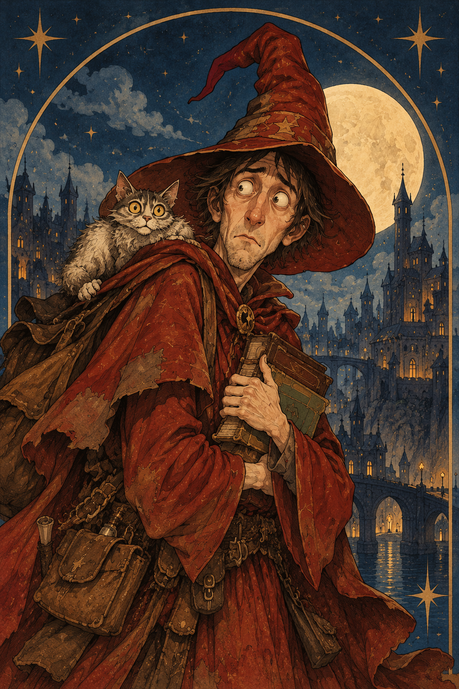
The reluctant wizard
A cowardly wizard and an unlikely adventurer with a remarkable talent for surviving the impossible.
Welcome to the Discworld, traveller — a realm where magic is unpredictable, gods meddle in mortal affairs, and common sense is often the rarest commodity of all.
Wander through the bustling streets of Ankh-Morpork, descend into the mysterious depths of the Dungeon Dimensions, venture into the ancient forests of Lancre, or cross the frozen mountains of Überwald, where vampires, werewolves, and other creatures of the night have their own rules. Dare to travel to the edge of the world, where the great Circle Sea spills into the stars?
Along the way, you may encounter witches and wizards, trolls and dwarfs, talking cats, ambitious kings, the occasional orangutan librarian, and Death himself — who, contrary to popular belief, has a surprisingly curious personality. Countless stories await beyond the horizon. The only question is: where will your journey begin?
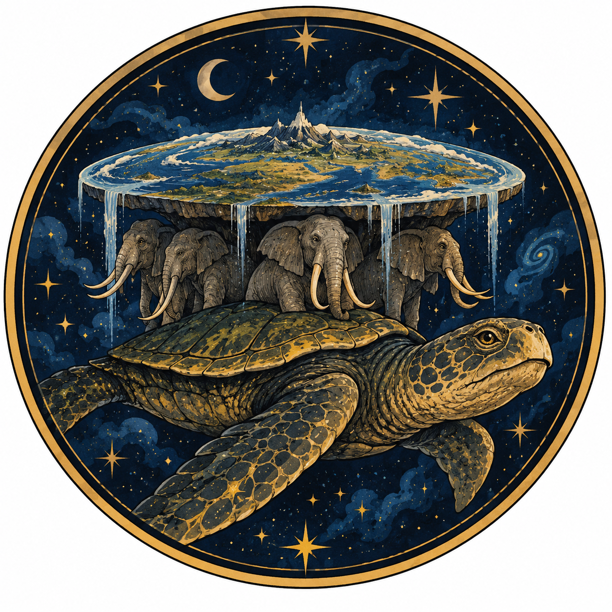
Countless adventures lie ahead, but no traveller should journey alone. Four paths lie before you. Choose your guide wisely, for each has a different tale to tell.

The reluctant wizard
A cowardly wizard and an unlikely adventurer with a remarkable talent for surviving the impossible.
The powerful witch
Ancient wisdom, peculiar customs, and a little headology go a long way.
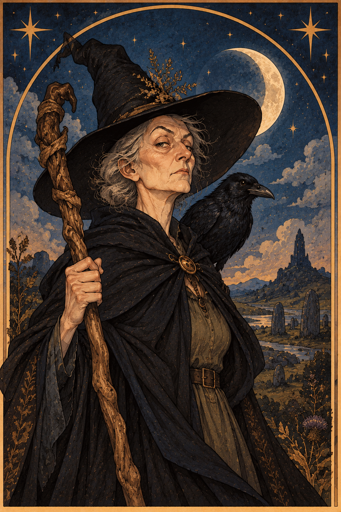
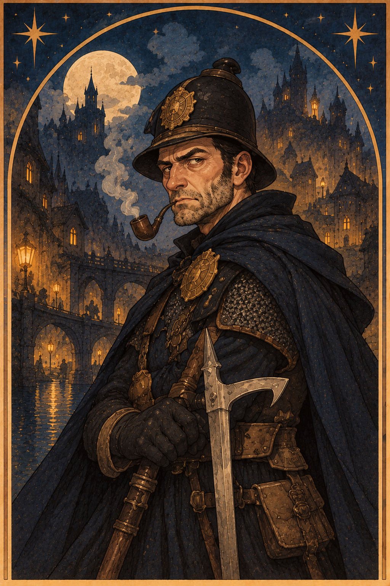
Commander of the Ankh-Morpork City Watch
Crooked streets, unlikely heroes, and a city where trouble never sleeps.
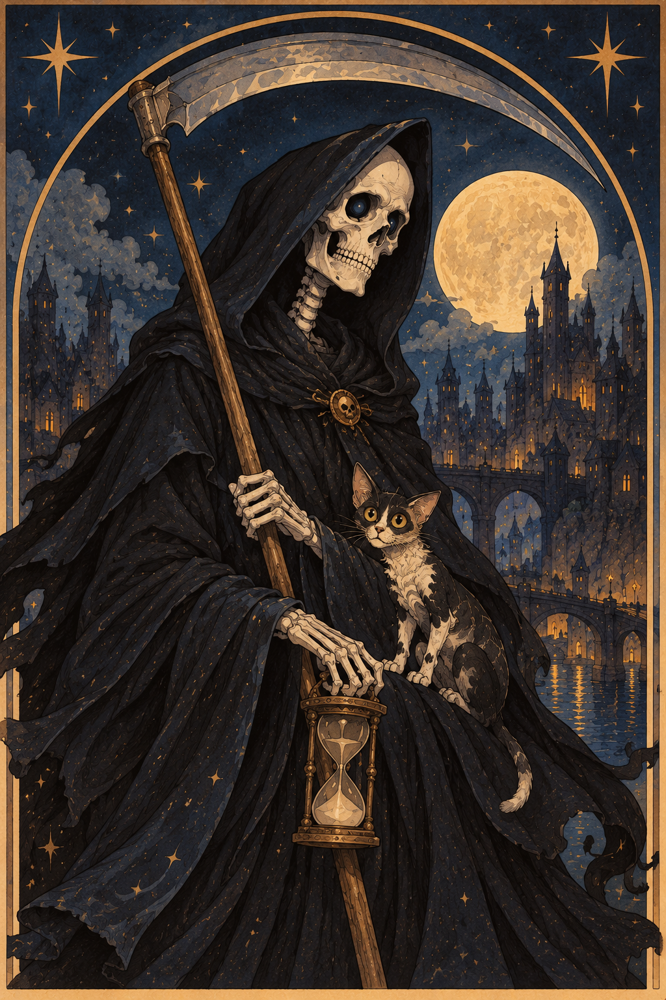
Also known as the Grim Reaper
A cosmic entity with a curious fascination for humanity and a job that never ends.
The main character of this series is Rincewind, a cowardly wizard who, after years of studying at the Unseen University, has never learned how to cast spells. However, he can shout for help in 14 languages. In the first novel of the series, The Colour of Magic, he meets the tourist Twoflower, and their encounter becomes the starting point of their adventures.
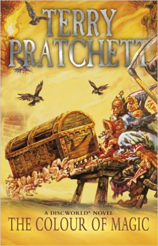
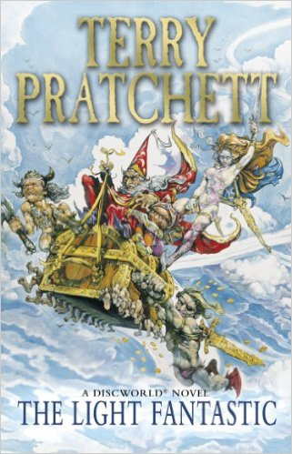
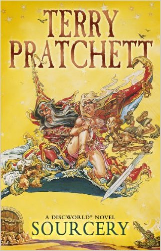
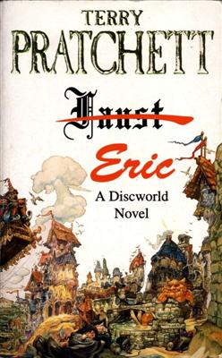
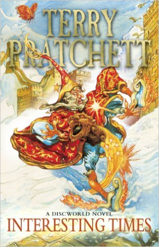
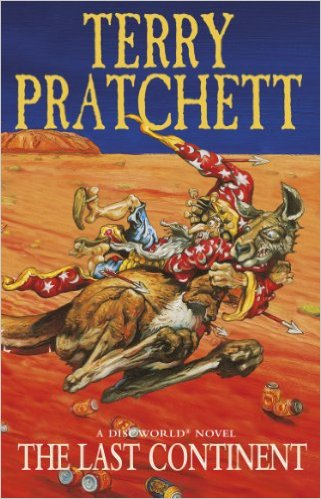
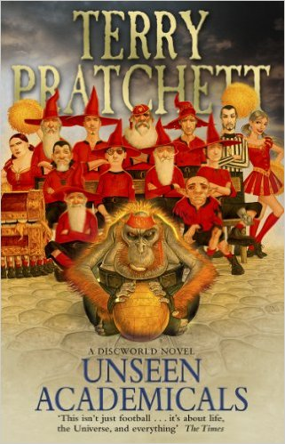
In Discworld, magic is practised not only by men but also by women. However, while wizards perfect their skills within the walls of the university, witches, who also possess magical knowledge, learn their craft in a different way. The first novel in the series, Equal Rites, tells the story of Esk, who must find her place in a world where magic is traditionally considered a man's domain. The series also features Granny Weatherwax, whose adventures show the differences between witches and wizards.
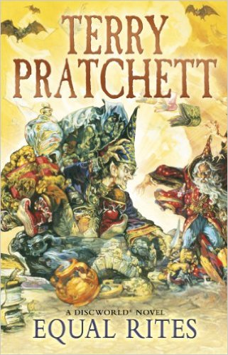
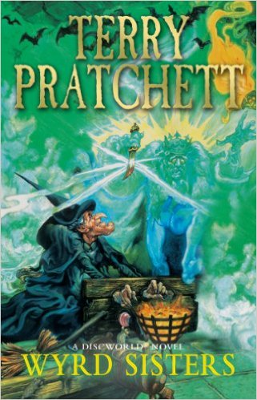
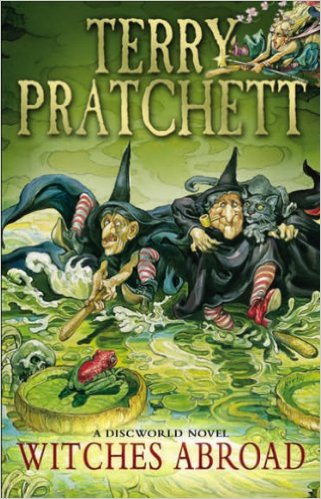
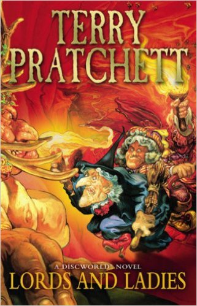
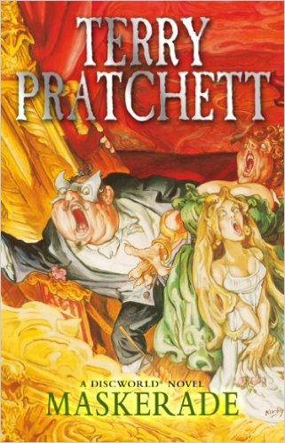
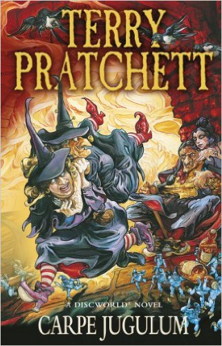
The events of this series take place in Ankh-Morpork, a city often compared to London, where the characters include former criminals and members of the City Watch. The stories feature policemen, corrupt officials, and bandits. The City Watch's life changes dramatically when a dragon appears and the city welcomes a new king.
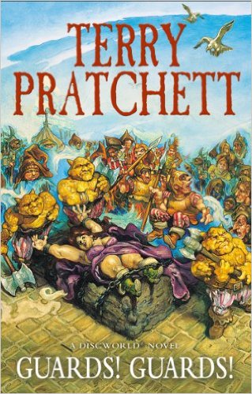
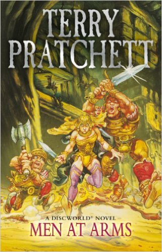
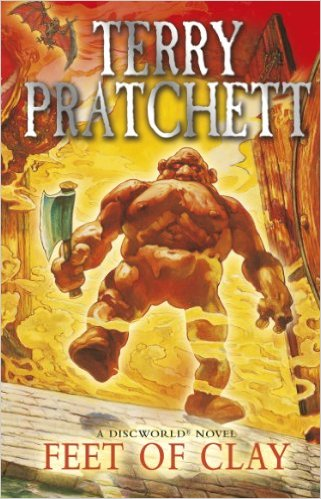
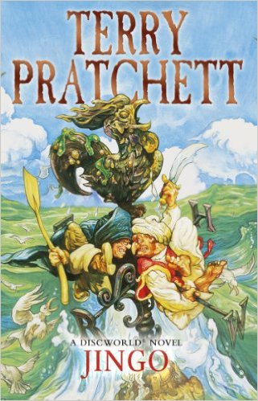
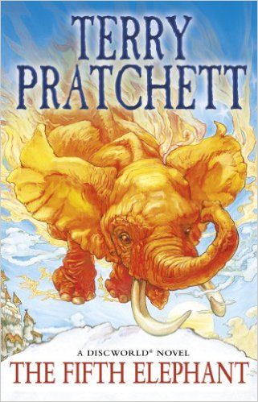
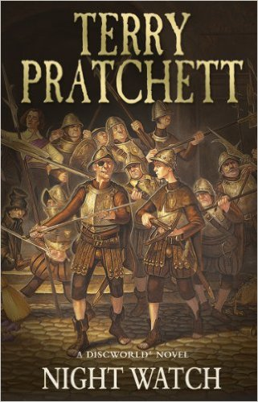
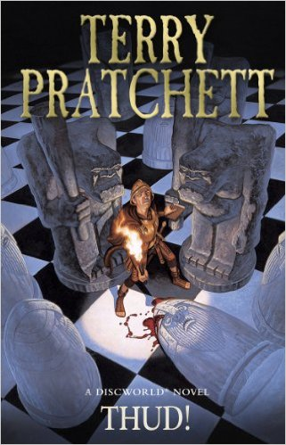
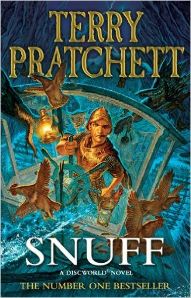
In Terry Pratchett's books, Death is not particularly frightening. He simply does his job. He has his own interests and weaknesses, including cats, cooking, and games of chance.
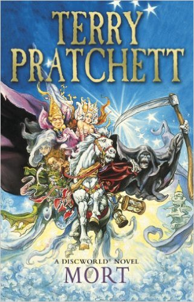
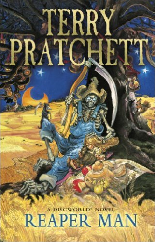
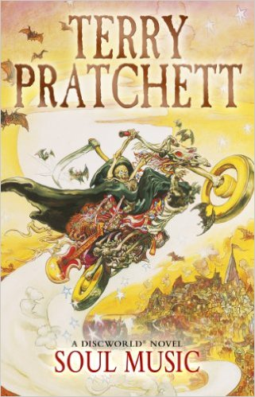
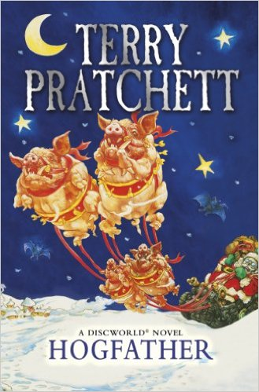
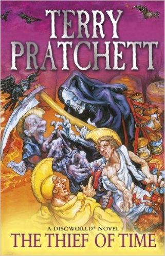